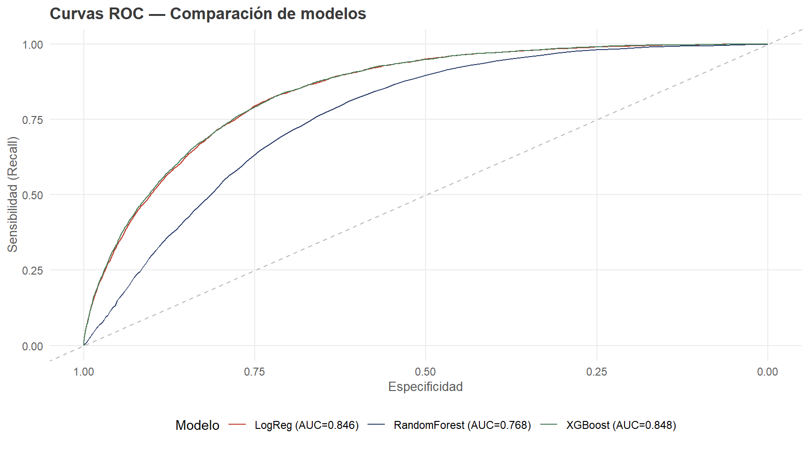
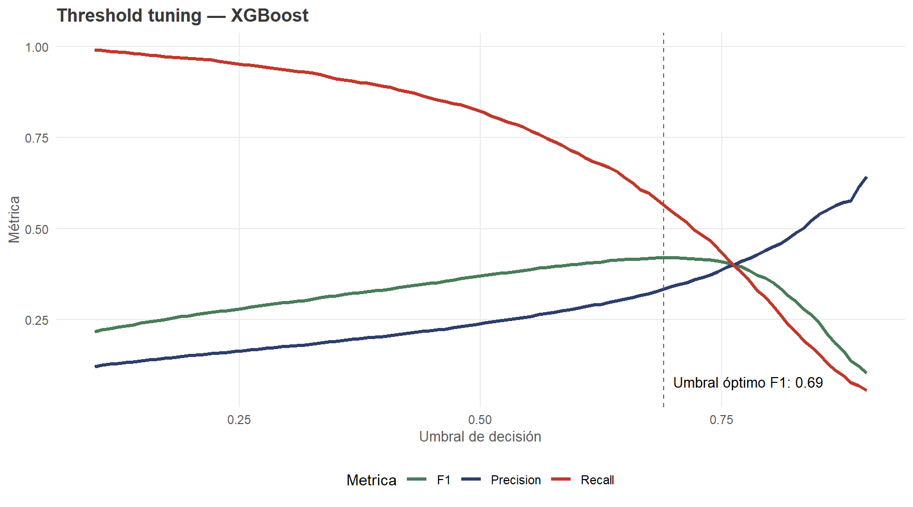
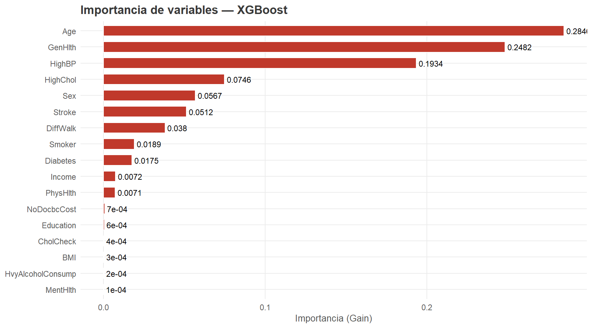
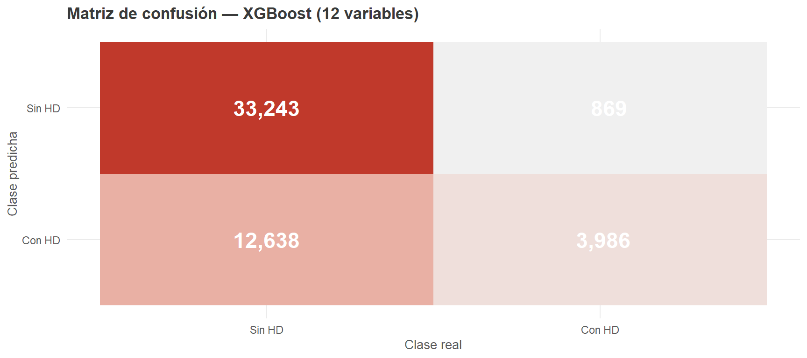
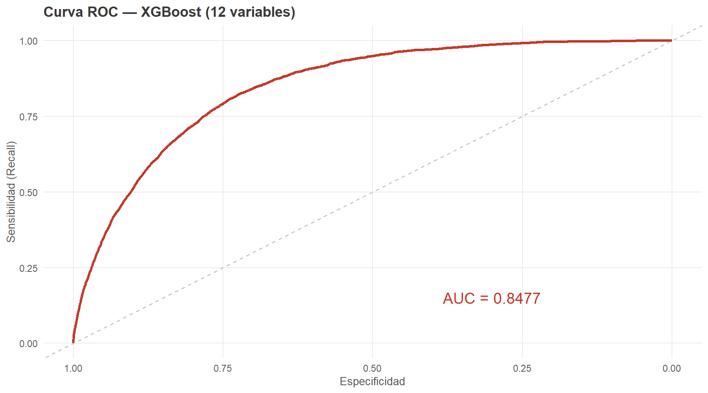

Capítulo 6 Modelado predictivo
Se implementó un pipeline reproducible que integra preprocesamiento y clasificación, evaluando cinco algoritmos con énfasis en el Recall como métrica principal.
6.1 Preparación de datos
X <- df[, names(df) != "HeartDiseaseorAttack"]
y <- df[["HeartDiseaseorAttack"]]
set.seed(42)
idx_train <- createDataPartition(y, p = 0.8, list = FALSE)
X_train <- X[idx_train, ]; X_test <- X[-idx_train, ]
y_train <- y[idx_train]; y_test <- y[-idx_train]
cat("Entrenamiento:", nrow(X_train), "registros\n")## Entrenamiento: 202944 registros## Test: 50736 registrosnegativos <- sum(y_train == 0)
positivos <- sum(y_train == 1)
scale_pos <- negativos / positivos
cat(sprintf("scale_pos_weight: %.2f\n", scale_pos))## scale_pos_weight: 9.66# Escalar variables continuas con MinMax
continuous_vars <- c("BMI","MentHlth","PhysHlth")
preproc <- preProcess(X_train[, continuous_vars], method = "range")
X_train[, continuous_vars] <- predict(preproc, X_train[, continuous_vars])
X_test[, continuous_vars] <- predict(preproc, X_test[, continuous_vars])
X_train_mat <- as.matrix(X_train)
X_test_mat <- as.matrix(X_test)6.2 Entrenamiento de modelos
6.2.1 Regresión Logística
lr_weights <- ifelse(y_train == 1, negativos / positivos, 1)
lr_model <- glm(y ~ ., data = data.frame(X_train, y = y_train),
family = binomial, weights = lr_weights)
lr_proba <- predict(lr_model, newdata = as.data.frame(X_test), type = "response")
lr_pred <- as.integer(lr_proba >= 0.5)
cat("LR — Recall:", round(Recall(y_test, lr_pred, positive = "1"), 4),
"| AUC:", round(auc(roc(y_test, lr_proba, quiet = TRUE)), 4), "\n")## LR — Recall: 0.7973 | AUC: 0.8466.2.2 Random Forest
set.seed(42)
rf_model <- randomForest(x = X_train_mat, y = factor(y_train),
ntree = 100, classwt = c("0"=1, "1"=scale_pos))
rf_proba <- predict(rf_model, X_test_mat, type = "prob")[, "1"]
rf_pred <- as.integer(as.character(predict(rf_model, X_test_mat)))
cat("RF — Recall:", round(Recall(y_test, rf_pred, positive = "1"), 4),
"| AUC:", round(auc(roc(y_test, rf_proba, quiet = TRUE)), 4), "\n")## RF — Recall: 0.4352 | AUC: 0.76776.2.3 XGBoost
dtrain <- xgb.DMatrix(data = X_train_mat, label = y_train)
dtest <- xgb.DMatrix(data = X_test_mat, label = y_test)
params <- list(objective = "binary:logistic", eval_metric = "logloss",
learning_rate = 0.05, max_depth = 3, subsample = 0.8,
scale_pos_weight = scale_pos, verbosity = 0)
set.seed(42)
xgb_model <- xgb.train(params = params, data = dtrain, nrounds = 100, verbose = 0)
xgb_proba <- predict(xgb_model, dtest)
xgb_pred <- as.integer(xgb_proba >= 0.5)
cat("XGB — Recall:", round(Recall(y_test, xgb_pred, positive = "1"), 4),
"| AUC:", round(auc(roc(y_test, xgb_proba, quiet = TRUE)), 4), "\n")## XGB — Recall: 0.822 | AUC: 0.84776.3 Tabla comparativa
| Modelo | Accuracy | Precision | Recall | F1 | AUC-ROC |
|---|---|---|---|---|---|
| Regresión Logística | 0.7525 | 0.2506 | 0.7973 | 0.3814 | 0.846 |
| Random Forest | 0.8047 | 0.2277 | 0.4352 | 0.299 | 0.7677 |
| XGBoost | 0.7321 | 0.2387 | 0.822 | 0.37 | 0.8477 |
XGBoost lidera en Recall y AUC-ROC, siendo seleccionado como modelo ganador.
6.4 Curvas ROC comparativas
roc_lr <- roc(y_test, lr_proba, quiet = TRUE)
roc_rf <- roc(y_test, rf_proba, quiet = TRUE)
roc_xgb <- roc(y_test, xgb_proba, quiet = TRUE)
ggroc(list(
"LogReg" = roc_lr,
"RandomForest" = roc_rf,
"XGBoost" = roc_xgb
)) +
scale_color_manual(values = c(riesgo_color, nude_palette[2], "#4A7C59"),
labels = c(
paste0("LogReg (AUC=", round(auc(roc_lr), 3), ")"),
paste0("RandomForest (AUC=", round(auc(roc_rf), 3), ")"),
paste0("XGBoost (AUC=", round(auc(roc_xgb), 3), ")")
)) +
geom_abline(slope = 1, intercept = 1, linetype = "dashed", color = "gray") +
labs(title = "Curvas ROC — Comparación de modelos",
x = "Especificidad", y = "Sensibilidad (Recall)",
color = "Modelo") +
theme(legend.position = "bottom")
Figure 6.1: Comparación de curvas ROC
6.5 Threshold tuning — XGBoost
thresholds <- seq(0.1, 0.9, length.out = 100)
recalls_t <- sapply(thresholds, function(t) Recall(y_test, as.integer(xgb_proba>=t), positive="1"))
precisions_t <- sapply(thresholds, function(t) Precision(y_test, as.integer(xgb_proba>=t), positive="1"))
f1s_t <- sapply(thresholds, function(t) F1_Score(y_test, as.integer(xgb_proba>=t), positive="1"))
best_t <- thresholds[which.max(f1s_t)]
cat(sprintf("Umbral óptimo (mejor F1): %.2f\n", best_t))## Umbral óptimo (mejor F1): 0.69data.frame(
Umbral = rep(thresholds, 3),
Valor = c(recalls_t, precisions_t, f1s_t),
Metrica = rep(c("Recall","Precision","F1"), each = length(thresholds))
) |>
ggplot(aes(x = Umbral, y = Valor, color = Metrica)) +
geom_line(linewidth = 1.2) +
geom_vline(xintercept = best_t, linetype = "dashed", color = "gray40") +
annotate("text", x = best_t + 0.01, y = 0.08,
label = paste0("Umbral óptimo F1: ", round(best_t,2)),
hjust = 0, size = 3.5) +
scale_color_manual(values = c("Recall"=riesgo_color,
"Precision"=nude_palette[2], "F1"="#4A7C59")) +
labs(title = paste("Threshold tuning — XGBoost"),
x = "Umbral de decisión", y = "Métrica") +
theme(legend.position = "bottom")
Figure 6.2: Trade-off Recall / Precision según umbral de decisión
Decisión: Se mantiene el umbral por defecto (0.50) para priorizar el Recall (0.82), dado que en un contexto médico preventivo el costo de no detectar un caso positivo supera el de generar un falso positivo.
6.6 Importancia de variables — XGBoost
imp <- xgb.importance(feature_names = colnames(X_train_mat), model = xgb_model)
imp_ord <- imp[order(imp$Gain), ]
ggplot(imp_ord, aes(x = Gain, y = reorder(Feature, Gain))) +
geom_col(fill = riesgo_color, color = "white", width = 0.65) +
geom_text(aes(label = round(Gain, 4)), hjust = -0.1, size = 3) +
labs(title = "Importancia de variables — XGBoost",
x = "Importancia (Gain)", y = NULL) +
theme(legend.position = "none")
Figure 6.3: Importancia de variables según XGBoost (Gain)
6.7 Modelo final: XGBoost con 12 variables
Cinco variables presentaron importancia cero y cuatro más fueron marginales. Se construyó un modelo reducido con las 12 variables de mayor importancia, obteniendo resultados prácticamente idénticos.
top_vars <- c("HighBP","GenHlth","HighChol","Age","DiffWalk",
"Sex","Stroke","Smoker","Diabetes","PhysHlth",
"Income","HvyAlcoholConsump")
X_final <- df[, top_vars]
set.seed(42)
idx_f <- createDataPartition(y, p = 0.8, list = FALSE)
X_tr_f <- X_final[idx_f, ]; X_te_f <- X_final[-idx_f, ]
y_tr_f <- y[idx_f]; y_te_f <- y[-idx_f]
# Escalar PhysHlth
pre_f <- preProcess(X_tr_f[,"PhysHlth",drop=FALSE], method="range")
X_tr_f$PhysHlth <- predict(pre_f, X_tr_f[,"PhysHlth",drop=FALSE])[,1]
X_te_f$PhysHlth <- predict(pre_f, X_te_f[,"PhysHlth",drop=FALSE])[,1]
scale_f <- sum(y_tr_f==0)/sum(y_tr_f==1)
dtrain_f <- xgb.DMatrix(data=as.matrix(X_tr_f), label=y_tr_f)
dtest_f <- xgb.DMatrix(data=as.matrix(X_te_f), label=y_te_f)
params_f <- list(objective="binary:logistic", eval_metric="logloss",
learning_rate=0.05, max_depth=3, subsample=1.0,
scale_pos_weight=scale_f, verbosity=0)
set.seed(42)
modelo_f <- xgb.train(params=params_f, data=dtrain_f, nrounds=100, verbose=0)
y_pred_f <- as.integer(predict(modelo_f, dtest_f) >= 0.5)
y_proba_f <- predict(modelo_f, dtest_f)| Métrica | Valor |
|---|---|
| Accuracy | 0.7338 |
| Precision | 0.2398 |
| Recall | 0.8210 |
| F1 | 0.3712 |
| AUC-ROC | 0.8477 |
cm_f <- table(Predicho = y_pred_f, Real = y_te_f)
cm_long <- as.data.frame(cm_f)
names(cm_long) <- c("Predicho","Real","Freq")
cm_long$Predicho <- factor(cm_long$Predicho, levels=c(1,0),
labels=c("Con HD","Sin HD"))
cm_long$Real <- factor(cm_long$Real, levels=c(0,1),
labels=c("Sin HD","Con HD"))
ggplot(cm_long, aes(x=Real, y=Predicho, fill=Freq)) +
geom_tile() +
geom_text(aes(label=format(Freq, big.mark=",")), size=6, color="white", fontface="bold") +
scale_fill_gradient(low="#f0f0f0", high=riesgo_color) +
labs(title="Matriz de confusión — XGBoost (12 variables)",
x="Clase real", y="Clase predicha") +
theme(legend.position="none")
Figure 6.4: Matriz de confusión — Modelo final
roc_f <- roc(y_te_f, y_proba_f, quiet=TRUE)
ggroc(roc_f, color=riesgo_color, size=1.2) +
geom_abline(slope=1, intercept=1, linetype="dashed", color="gray") +
annotate("text", x=0.3, y=0.15,
label=paste0("AUC = ", round(auc(roc_f), 4)),
size=5, color=riesgo_color) +
labs(title="Curva ROC — XGBoost (12 variables)",
x="Especificidad", y="Sensibilidad (Recall)")
Figure 6.5: Curva ROC — Modelo final
Conclusión: Con solo 12 preguntas de encuesta telefónica, el modelo detecta más de 8 de cada 10 personas con enfermedad cardíaca, sin necesidad de exámenes de laboratorio ni procedimientos costosos.